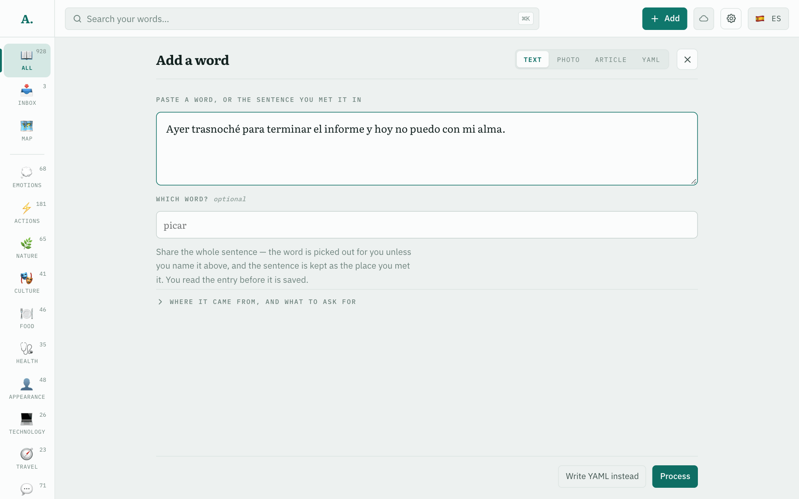
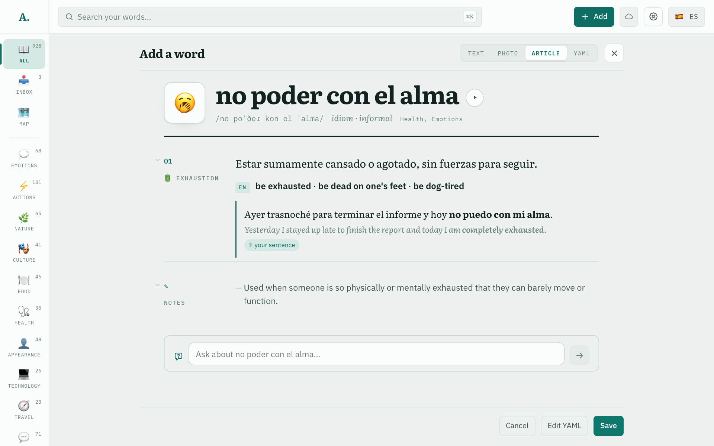

1 · The sentence you met

Two model callsResolve decides what the text is about: which word, which language, which sentences are yours. Compose writes the entry. A duplicate or an unknown language stops after the first call.
2 · The entry, for review

MeasuredTwo fields were added to the compose prompt for the loops. Over 315 calls, each of ten measures of the entry's substance moved less than its own run-to-run noise, so the prompt was not split.experiments/compose-lesson-line